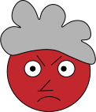

T2
T2
Animation
Beskrivelse
I opgaven “animation” var målet et website med et interaktivt animeret spil af egen produktion. Dertil en dokumentation. Jeg finder min egen rolle i designet, den interaktive proces, beslutningsprocessen og den forståelse, der skal være på plads omkring konventioner, prototypisk og testning. Der skal testes for brugeroplevelse, findes fotostil og billedbehandles i planlægning og produktion af indhold. Det var en selvstændig opgave, hvor jeg brugte følgende værktøjer: .mp3, .svg, CSS, JavaScript og Illustrator. Jeg lærte at gå fra ide til skitse og udvikling. Udover figurelementer, baggrundsdesign og meget mere fra illustrator, så også genbrug fra Tema 3. Jeg lærte endelig at kunne udvikle mit eget spil. Javasciptet udfordrede mig en del, men jeg havde måske stillet for store krav til mig selv.
Spillet
16/9 format
Retningslinjer
Tre faktorer
Tre faktorer, der fortæller, hvor mange point man har
piont
liv
tid
Slutninger
Baggrundsskærm til enten vinder eller taber i spillet, SVG


Process
Anvendelse af statemachine- og layoutdiagram for at få spillet til at fungere.
Første design

Layoutdigram

Andet design

State-machine-diagram

Dokumentation
SVE-filer til spillet
Forskærm

Start skærm

Heart

Design
Figurdesign
Baggrund

Jeg lavede en test, hvor jeg skulle sammensætte tre slags ord, og hvert ord skulle komme fra hver sin kolonne.
Jeg landede på svigermor-skider-puder.
Mine designs blev tegnet i Illustrator.
Derefter blev designs konverteret til svg filer.
designs skal bruges bl.a. til baggrunden i mit spil.
Jeg brugte state-machine-diagramet og layoutdiagramet til at få struktur over spillet.
Spillet er en del af en hjemmeside.
Jeg valgten at gå med stilen flat-game design.